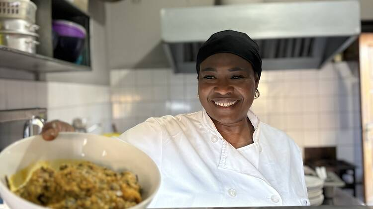

Ya Awa Nyass started cooking in 2001.She loves prepaaring fresh Gambian meals for her customers. Today wec ontinue to serve tranditional Gambian dishes, including Mbahal,Benachin and Fish yassa. Every meal is carefully prepared to give you a fresh and satisfying experience.
Dine with us, or place your oder ahead, enjoy freshly prepared meals delivered hot and straight to your home.
Read about Gambian food on wikipedia